Open a video meeting right from a group room. The helper joins as a participant, shows captions for each speaker, finds and shows materials that match what's said, like "Shall we look at the quote again?", and turns requests made during the meeting into work. When people speak different languages, each speaks their own and hears the others interpreted into theirs. When the meeting ends, the minutes stay in the room without anyone clicking anything.
Why meet in a room#
In Chapter 15, you talked by text in a group room. This time, you meet face to face in the same room.
When someone says "the quote from last time," "let's look at the floor plan again," or "how far along is the travel expense settlement?" in a meeting, someone shares their screen and goes hunting for the file. But those materials are already inside Lite: files shared in the room, each person's outputs, processes in progress, and documents in shared folders.
And requests made in the meeting ("Please redo it with the amount 5% lower") get forgotten once the meeting ends, or someone has to write them down again. A Lite meeting opens inside a room, so what was said stays in that room as is, and requests lead to suggestion cards.
| During the meeting | What the helper does |
|---|---|
| When you speak | Each person's browser sends only its own microphone audio, one utterance at a time, and the server transcribes it and shows it as captions for each speaker |
| Words that point to materials | Finds materials you have permission to see and shows them in the Materials panel (files, progress, panel app data, folder documents) |
| Show to everyone | The same material opens on every participant's stage, each as their own copy |
| Words that ask for something | Shows a Start / No suggestion card. The agent of the person who clicks does the work and posts the result to the Materials panel and the room |
| Someone speaks another language | Shows the translation with the original under it, and speaks it in each listener's language (AI interpretation) |
| When the meeting ends | Leaves minutes in the room with a summary, decisions, to-dos, participants, time and the materials shown, and shows to-dos as suggestion cards to whoever is responsible |
What you need#
| Item | Details |
|---|---|
| Browser | The latest Chrome or Edge, with a camera and microphone (you can still join without them) |
| People | Up to 6 in one meeting. Participants' browsers connect to each other directly, so the more people there are, the busier each computer and connection gets |
| Transcription | The server needs a transcription key for captions, finding materials and minutes to work (Chapter 1). Without it, you get video meetings only |
| Room | Meetings are opened from a room. Only room members can join, and captions and materials go only to members |
| Materials | In our run, team lead Jinyoung Jang had posted the quote and floor plan to the group room in advance (Here are the Store #2 quote and floor plan to look at together in Thursday's meeting.) |
| Interpretation | Optional. When people with different main languages meet, the server interprets with the same OpenAI key (Try it 6) |
Try it 1 — start the meeting and consent#
- Open the group room from Chapter 15 (Jinyoung Jang, Minji Kim, Seoyeon Park).
- Click Start meeting in the room header. On the screen before you join, you can turn the camera and microphone on or off.
- Turn on I consent to transcription and saving to the room and click Join.
Each person consents separately. For anyone who doesn't consent, the browser doesn't send their audio to the server, and the server doesn't accept it either. What they say doesn't appear in captions or minutes, and the minutes list them as someone who didn't consent.
The other two also join by clicking Start meeting in the same room (Join meeting · n if it's already in progress).
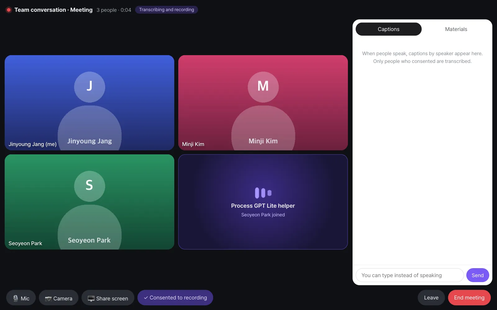
The screenshots in this chapter
We opened a real meeting with three accounts to take them. Name pictures appear where the camera video would be. Transcription, finding materials, suggestions and minutes are all results of it actually running.
Try it 2 — speak, and materials appear#
What was said in the meeting (the script from our run):
| Speaker | What they said |
|---|---|
| Jinyoung Jang | All right, let's get started on the Moonlight Coffee Seongsu proposal. |
| Minji Kim | Shall we look at the Moonlight Coffee quote we sent last time again? |
| Seoyeon Park | Sure. Let's look at the floor plan too. They asked us to move the bar counter. |
| Jinyoung Jang | And how far along is last week's Busan travel expense settlement? |
| Minji Kim | The policy review is done. Only the team lead's approval is left. |
A few seconds after Minji Kim's words appeared in the captions, a quote appeared in the Materials panel. Next came the floor plan, and then the progress of the travel expense settlement in progress. Minji Kim claimed this travel expense settlement after a site trip ("Moonlight Coffee Store #2 site, Busan"), and you'll start and approve one yourself in Chapter 18. If there's no process in progress yet, this material doesn't appear. The helper picks among everything you may see, so the quote it finds can be one of your own files (in our run, My file Moonlight Coffee quote.xlsx) rather than the one shared in the room.
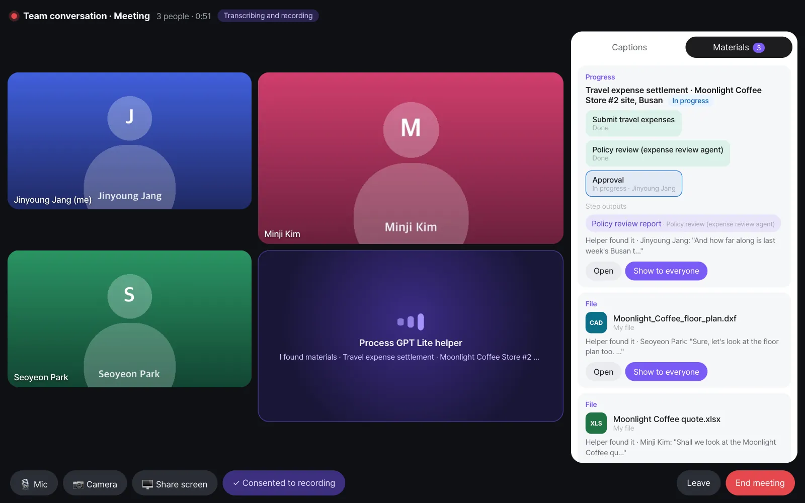
Check
- Each material card shows the words it was based on, like "Helper found it · Minji Kim: "Shall we look at the Moonlight Coffee qu…"".
- The progress card shows the status of each step (Submit travel expenses · Done, Policy review (expense review agent) · Done, Approval · In progress · Jinyoung Jang) and the step output (Policy review report).
- Materials appear only to people who can see them. Files shared in the room are visible to all members, and process progress only to people involved in that case (Chapter 18).
How materials are found#
It works the same way as the room helper in Chapter 15. From the rolling captions, ① rules filter out chitchat, and ② a small routing model picks "Do these words point to materials, and to what?" Only the last few lines of speech go to the routing model. In our run's meeting, the routing model took about 0.4 seconds per call (median), and no big AI model was used even once to notice things.
Try it 3 — show it to everyone#
Team lead Jinyoung Jang clicks Show to everyone on the quote card. The quote opens on every participant's stage (the big screen in the middle).
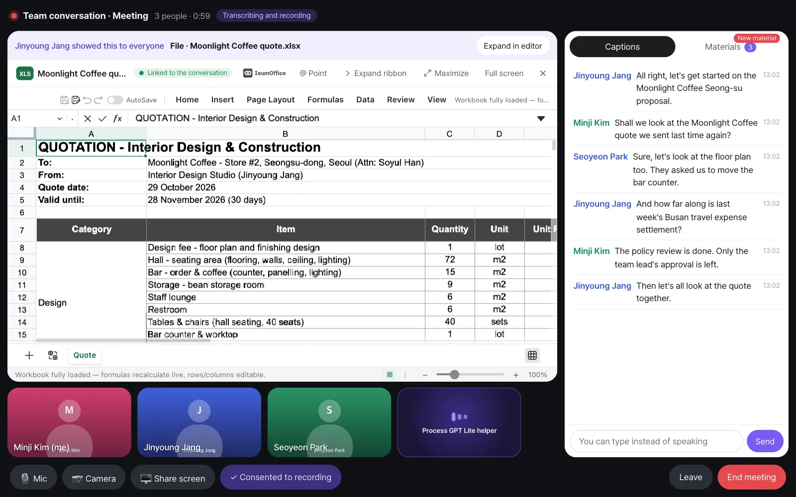
Each person sees their own copy, so even if Minji Kim edits a cell, it doesn't change the others' screens or team lead Jinyoung Jang's original. Note that this isn't co-editing, where everyone edits the same document at the same time. Click Take down to remove it from the stage.
Try it 4 — requests during the meeting#
The conversation continues:
| Speaker | What they said |
|---|---|
| Jinyoung Jang | Then let's all look at the quote together. |
| Seoyeon Park | The owner said the budget is a little tight. |
| Minji Kim | Then let's ask the AI to redo the quote 5% lower. |
Minji Kim's request appears as a suggestion card at the top of the Materials panel.
Say it to the AI
In an English meeting, the helper offers a card for words addressed to the AI, like "let's ask the AI to…" or "could the assistant…". "Please redo the quote" on its own reads as work given to someone at the meeting, and in our tests it got no card.
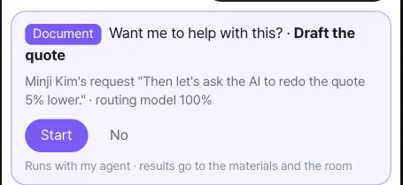
When team lead Jinyoung Jang clicks Start, her agent gets the meeting captions and the quote that was shown, and starts working. The room gets "Handed to the agent · Draft the quote".
Check: When the result is ready, an Agent result card appears in the Materials panel, the card turns into "✓ Draft the quote — the result is in the materials", and a "Jinyoung Jang's agent · …" message and the file are posted in the room. In our run, it produced Moonlight Coffee Store 2 quote (revised -5%).xlsx: the same items and quantities with every unit price 5% lower (total 149,600,000 → 142,120,000 KRW, VAT included). It can take ten minutes or more for the result to come, but even if you end the meeting first, the work continues and the result is posted to the room.
Try it 5 — after the meeting, the record stays in the room#
The meeting ends when someone clicks End meeting (Leave only takes you out). Open the room, and even though nobody wrote anything down, the following are there.
| Record | Details |
|---|---|
| Meeting card | "📹 The meeting has ended · 13:01–13:03 · 3 attended" — during the meeting, the same card shows Join and changes in place |
| Minutes block | "🎙 Meeting minutes 1 · 13:02–13:03 · 10 lines" — one message grouping the turns of speech, updated in place. It doesn't pile up one line per sentence (Show 4 earlier lines opens the rest) |
| Meeting materials | One card for each material shown — who showed it and which words it was found from |
| Handed-off work | "Handed to the agent · …" and its result |
| Final minutes | Summary, decisions, to-dos, participants, time, materials shown, and work handed off during the meeting |
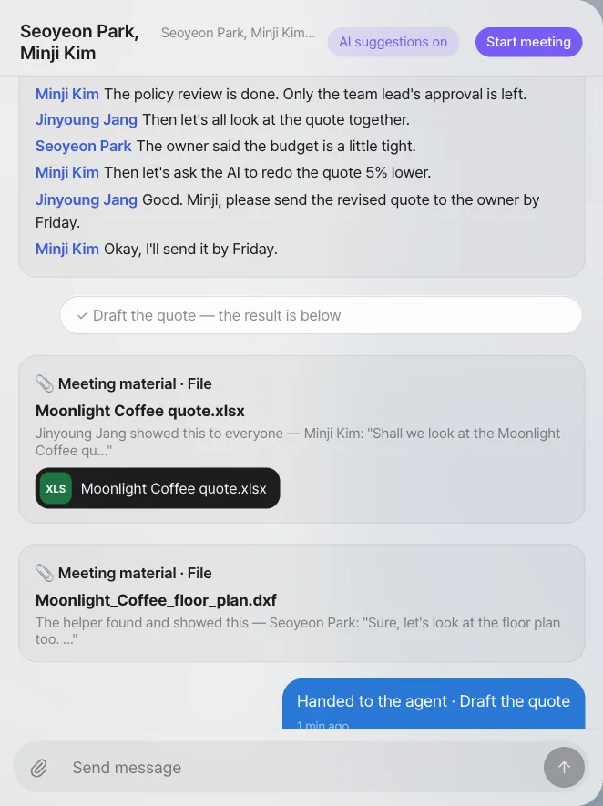
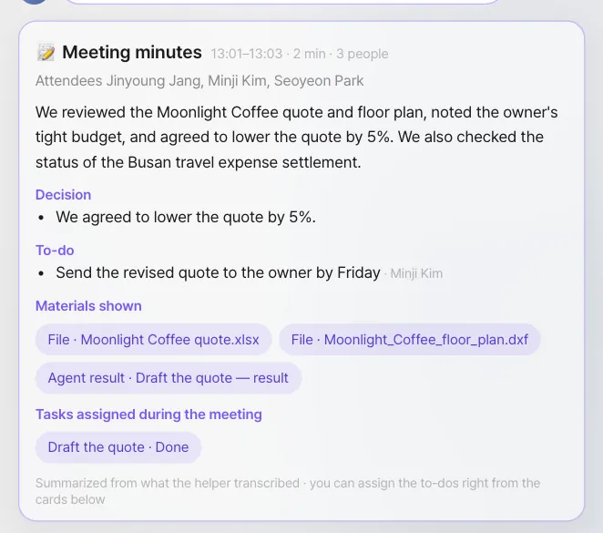
To-dos in the minutes that have someone responsible appear to that person as a Start / No card. If no one is responsible, they appear to all participants.
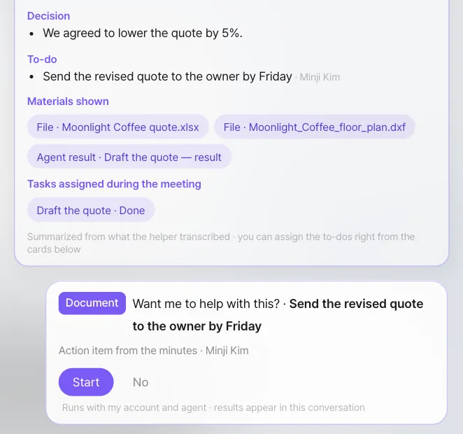
This record looks exactly the same when you open the room on the Process GPT screen. People who joined the meeting late, or who join the room later, can read what was decided.
When you see "Summarized by rules" below the minutes
The current version uses an AI model once, after the meeting ends, to put together the summary, decisions and to-dos in the final minutes. If the model doesn't respond in time, it leaves minutes put together by rules instead (who spoke how many times, handed-off work, materials shown). In that case, decisions and to-dos are empty, so look at the minutes blocks left in the room (what was transcribed) and put them together yourself. Minutes the model put together get "Summarized from what the helper transcribed", as in the picture above.
Try it 6 — a meeting in two languages#
In Chapter 15, the team started a room with Yuki Sato, the lighting designer at the partner studio in Tokyo (an example person). She speaks Japanese; team lead Jinyoung Jang and Minji Kim speak English. Nobody needs a human interpreter: each person speaks their own language and listens in theirs.
- Set your main language. It's in Settings › Accounts › About me › Main language, and also on the screen before you join, as The language I speak. What you pick there is saved for your account.
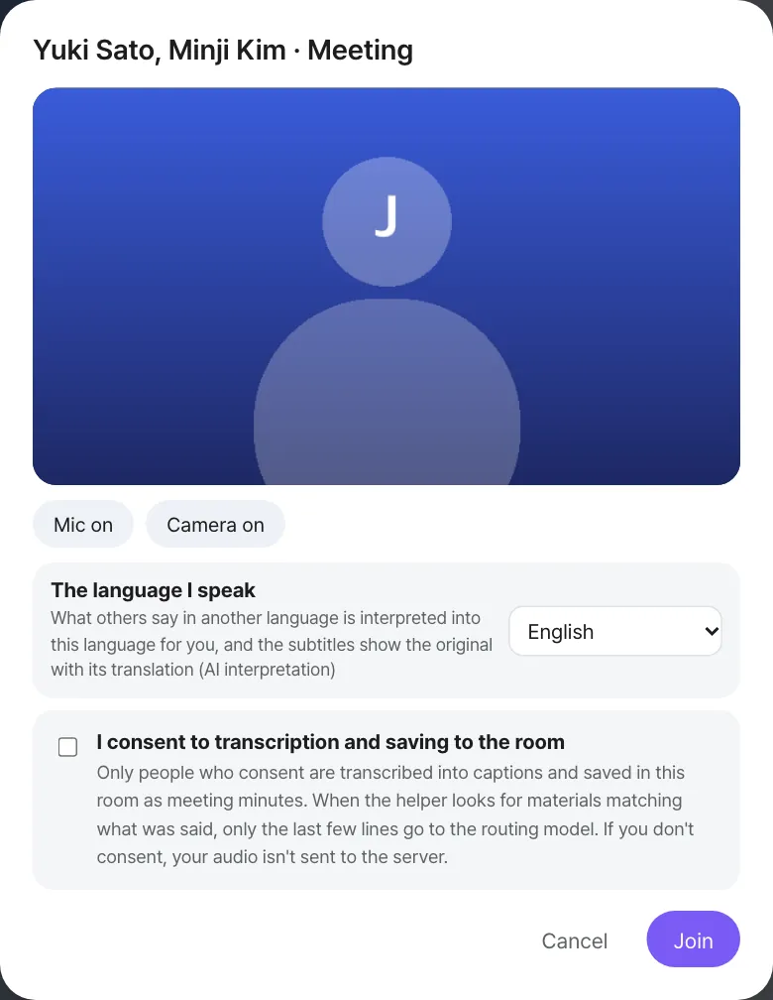
- Open the room "Yuki Sato, Minji Kim" and click Start meeting. The other two join from the same room.
- Because the main languages differ, interpretation turns on by itself. The top of the screen shows AI interpretation · English ⇄ 日本語 and an Interpretation on switch, and each tile shows the person's language.
What was said (the script from our run, with what Jinyoung Jang read):
| Speaker | What they said | On Jinyoung Jang's screen |
|---|---|---|
| Jinyoung Jang | Thanks for joining, Yuki. Let's go over the evening lighting for Store #2. | (as said) |
| Yuki Sato | よろしくお願いします。夜はバーカウンターの上の照明を少し暗くしたいと思います。 | Thank you. In the evening, I'd like to dim the lighting above the bar counter a bit. |
| Minji Kim | Good idea. Shall we look at the quote again? | (as said) |
| Yuki Sato | 照明工事の金額が少し高いので、AIに見積書を5%下げて作り直してもらいましょう。 | The cost for the consumption work is a bit high, so let's have AI redo the estimate with a 5% reduction. |
| Jinyoung Jang | Okay. My agent is on it now. | (as said) |
| Yuki Sato | ありがとうございます。照明の図面は金曜日までにお送りします。 | Thank you. We'll send the lighting plans by Friday. |
In our run, transcription heard 照明 (lighting) in Yuki's request as 消費 (consumption), and the translation followed what was written down. The request still came through as a Draft the quote card.
When Yuki finishes a sentence and pauses, this happens on Jinyoung Jang's and Minji Kim's screens:
| You hear and see | Details |
|---|---|
| Her words in English | The interpreter speaks them in your main language. Yuki's tile shows AI interpretation while it does |
| Her own voice, lower | While the interpretation plays, her voice is turned down (not cut), and it comes back up afterwards |
| Captions with both | The English translation, and the Japanese original under it with its language. Original first puts the original on top |
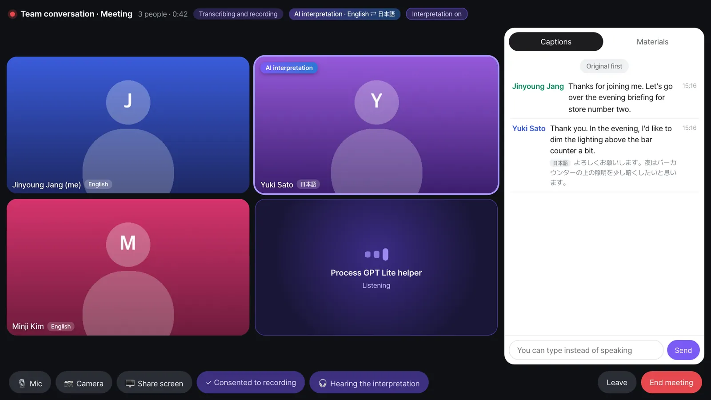
You never hear your own words interpreted, and between two people with the same main language nothing is translated or interpreted. On Yuki's screen, it's the other way round: Jinyoung's and Minji's English reads and sounds in Japanese.
The helper works across languages too. Yuki's request in Japanese was read through its English translation and became a Draft the quote card on Jinyoung Jang's screen, and Start handed it to her agent as in Try it 4.
Switches for interpretation#
| Switch | Who | Effect |
|---|---|---|
| Interpretation on / off (top) | Anyone in the meeting, for the whole meeting | Off: the interpreter's voice stops for everyone. Captions keep their translations |
| 🎧 Hearing the interpretation / 🔊 Hearing the original voices (bottom) | Each listener | Original: you hear everyone's own voice at full volume, and no interpreted voice is made or sent for you. Captions stay translated |
| The language I speak / Main language | Each person | What you speak and what you read and hear in |
After the meeting, in each person's language#
The room keeps the minutes blocks with each line's language and its translations. Jinyoung Jang reads Yuki's lines in English, and Show original shows them as said.
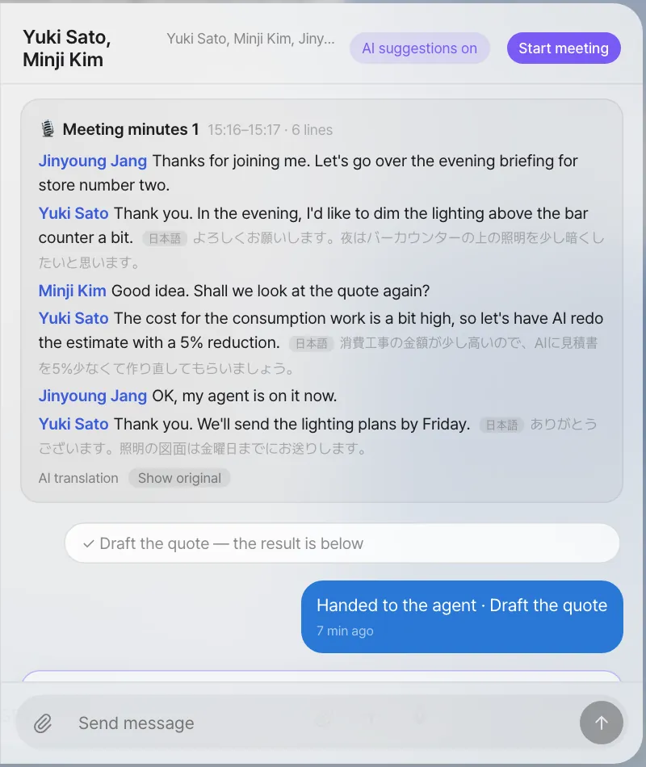
The final minutes are written once, in the meeting's language (the language of the person who started it, here English), and translated into each member's main language. Yuki reads the summary, decisions and to-dos in Japanese, with AI translation · English and Show original.
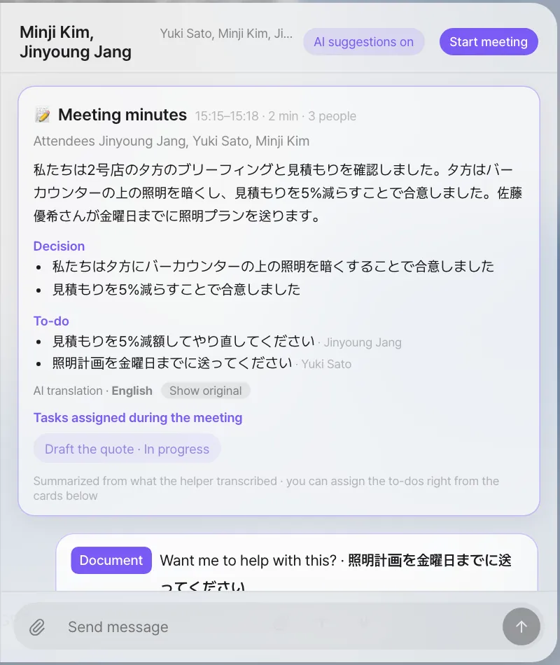
Limits of interpretation
- It starts after a pause. Your browser sends speech a phrase at a time, when you stop for about a second. In our runs the interpreted voice began 0.8 seconds (median; 1.1 seconds for 9 in 10) after a phrase reached the server, so take turns rather than talking over each other. If someone speaks while an interpretation is playing, the browser's echo canceller can turn their microphone down and that phrase can be lost.
- Consent. Only people who consented to transcription are transcribed, and so only they are translated and interpreted. Someone who didn't consent is heard as they speak, without captions or interpretation.
- The key. Interpretation and translation use the OpenAI key on the server. Without it, when the operator has turned interpretation off, or when the usage limit is reached, the meeting says so and shows the original only.
- Two separate results. The interpreter's voice and the caption translation are made separately, so their wording can differ a little. Transcription can also mishear words, and the translation follows what was written down.
- Screens. The screens come in Korean and English only. A main language other than Korean gets the English screens.
Consent and switches#
| Switch | Scope | Effect |
|---|---|---|
| I consent to transcription and saving to the room | Per person, per meeting | When off, your audio doesn't go to the server. You can change it during the meeting with the ✓ Consented to recording button at the bottom |
| You can type instead of speaking | Input box in the Captions tab | What you type without a microphone also goes into captions and minutes (only if you consented) |
| Helper per room | Per room | When off, you get only a video meeting, and the room keeps only the start and end cards. The current version has no button for this on screen, so the operator changes it |
| Server-wide helper | Whole server | When off, every room gets video meetings only, with no helper or transcription |
| Server-wide meetings | Whole server | When off, the whole meeting feature disappears |
The operator sets the server-wide switches in the server settings (Chapter 25).
Known limits#
- Up to 6 people: participants' browsers connect to each other directly, so the current version allows up to 6 people per meeting. For bigger meetings, use another video meeting tool.
- Behind a company firewall: on some company networks, direct connections between browsers are blocked, so the meeting can't connect. The current version has no relay server to connect them instead, so use it on the same company network or the regular internet.
- Not co-editing: Show to everyone opens the same material as each person's own copy.
- Transcription errors: transcription can get words wrong (in our run, it wrote "Seongsu" as "Seong-su"). Finding materials judges words together with what comes before and after, so it's usually not affected.
Next#
That's the end of Part 4, "Working as a team." You're starting to see that the same flow — receiving the email, the floor plan, proposal and quote, the design review, the quote review, the proposal meeting and the reply — repeats even when the customer changes. In Part 5, you make this flow into a process. First, you design one yourself by chatting (Chapter 17).
Check your understanding
- If Seoyeon Park turns off transcription consent when she joins the meeting, what happens to what she says? How is she listed in the minutes?
- During the meeting, Minji Kim changed an amount in her copy of the quote that was shown. Does team lead Jinyoung Jang's original quote change?
- If the person responsible for the to-do "Send the revised quote" in the minutes is Minji Kim, whose screen does that suggestion card appear on?
- In the meeting with Yuki Sato, Minji Kim switches to 🔊 Hearing the original voices. What does she hear when Yuki speaks, and what do her captions show?
Answer
- Seoyeon Park's browser doesn't send her audio to the server, so it doesn't go into captions, finding materials, or the body of the minutes. Her video and voice still reach the other participants as usual. The final minutes list Seoyeon Park under "Didn't consent to transcription."
- No. What Minji Kim opened is her own copy.
- Only on Minji Kim's screen. Only to-dos with no one responsible appear to all participants.
- She hears Yuki's own Japanese voice at full volume and no interpreter. Her captions still show the English translation with the Japanese original under it. Jinyoung Jang's choice isn't affected.